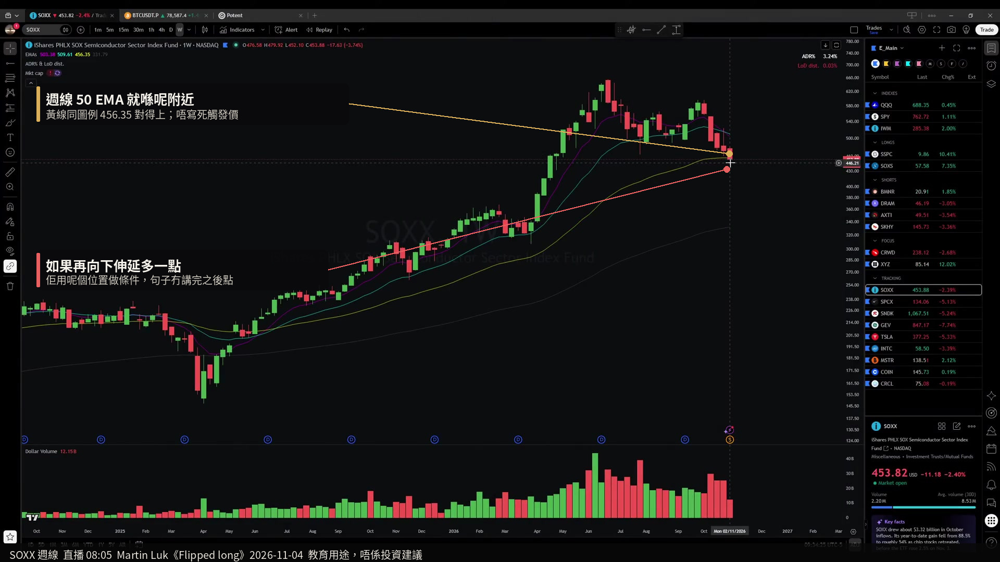

概要
想 cover，但條件寫喺週線 50 EMA
07:59 至 08:11，佢話諗住 cover 自己嘅 semi short，但加咗一個條件：如果再伸延多一點、再喺週線 50 EMA 下面多一點。講呢句嗰陣，畫面係 SOXX 週線。價格就喺一條較慢嘅黃線附近，圖例數值 456.35 同呢條黃線對得上；但本頁唔會寫死觸發價，因為畫面冇見到落單票，句子亦冇講完「如果真係伸延」之後會點。
圖一
SOXX 週線：50 EMA 就喺呢附近
直播 08:05

原話
I think I will cover my semi short but if it it's going a little bit extended like a little bit more below the one the 50 EMA on the weekly
我諗我會 cover 我嘅半導體淡倉，但如果佢再伸延多一點，再喺週線 50 EMA 下面多一點……
點樣讀
讀呢幅圖，先對位置：當時價格就喺黃線附近。圖例冇印「50」呢個字，但 456.35 呢個數值同黃線位置吻合，又係佢講緊 weekly 50 EMA 嗰陣嘅畫面，所以註解先標「就喺呢附近」。呢個係位置對讀，唔係已經核實嘅設定表。
原話係一個條件句，而且轉寫到 weekly 就停，冇清楚講如果真係再跌穿會點。所以唔好補寫觸發價、倉位或者一定會 cover。
附註
注意事項
- 講呢句之前，畫面曾經出現 SOXS（3 倍淡半導體 ETF）同 SOXX 日線，但對白明確講嘅係週線 50 EMA，所以主圖用 08:05 嘅 SOXX 週線。
- 畫面睇唔到成交價、倉位大細或者損益，所以唔寫死呢啲數字。
免責聲明：呢份係教育拆解，唔係投資建議，亦唔好當作買賣指示。